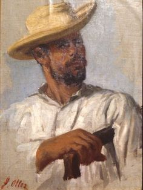
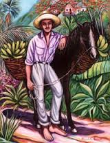
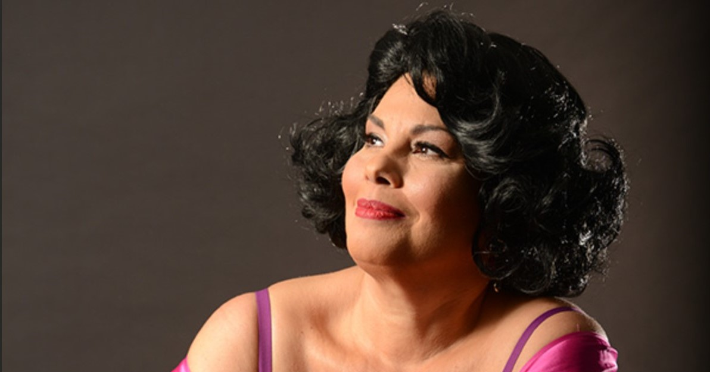
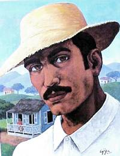
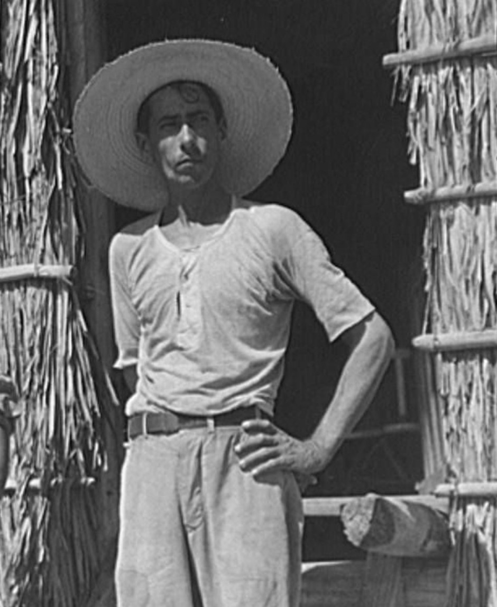

En esta sección, se estará hablando y presentando los personajes principales de La Carreta. También se adjuntará una foto de cada personaje.
El abuelo de la familia. Era un hombre muy alegre y dulce para sus nietos. Don Chago tuvo muchas esperanzas para su familia al mudarse del campo a la ciudad pero a él le fascinaba la tierra. Por eso no se mudo con el resto de la familia a la ciudad. Finalmente, a los setenta y tres años, se fue a vivir a la Cueva del Indio donde muere al final de la obra.
Madre de Juanita, Chaguito y Luis con cincuenta y cinco años. Es viuda y es la mujer que más se destaca en La Carreta. Podemos verla como un personaje “gritona” pero tiene mucha compasión.
.jpg)
Hija de Doña Gabriela. Es el personaje que más problemas enfrentó en la historia. Juanita tenía diecinueve años al principio de la novela. Cuando se mudó a la Perla, ella fue violada y quedó embarazada. Juanita aborta al bebe para tratar de que de Miguel (su amante) no se dará cuenta. Debido a esto, cae en una terrible depresión e intenta suicidarse. Después cuando se mudo a Nueva York, se convierte en una prostituta. Al final de la obra, Juanita vuelve a Puerto Rico para convertirse en una persona nueva y encontrarse nuevamente con Miguel.

Un joven adulto de veinticuatro años. Doña Gabriela fue su madre de crianza. Luis nunca se mantenía en un trabajo ni hogar fijo. Él fue el que quería mudar toda su familia a la Perla por su trabajo. Cuando fracasó, llevó a su familia hasta Nueva York. Ahí trabajó en una fábrica de calderos y después murió mientras trabajaba ahí.

Era un joven de quince años. Hijo de Doña Gabriela y hermano de Juanita y Luis. Chaguito era un niño muy vago, travieso y malcriado. Era muy listo y lleno de energía, pero también muy malcriado. Al final de la obra, Chaguito fue arrestado por robarle a Doña Gabriela.

Señora de cuarenta y dos años y madre de Chinita. Germana era muy servicial ya que ayudó a la familia empacar durante su proceso de mudanza del campo a la ciudad y le ofreció hospedaje a Don Chago antes de marchar hacia la cueva.

Era el peón de Don Tello y el muchacho con el cual Juanita tuvo un romance.

íbaro puertorriqueño de Morovis con ascendencia española. Él tenía treinta años y es descrito como un hombre limpio y romántico. Paco emigró a Nueva York para encontrar libertad ya que fracasó como escritor en Puerto Rico. En Nueva York consiguió trabajo como locutor de radio en una estación latina. En adición, Paco le había propuesto matrimonio a Juanita pero ella lo rechazó.
